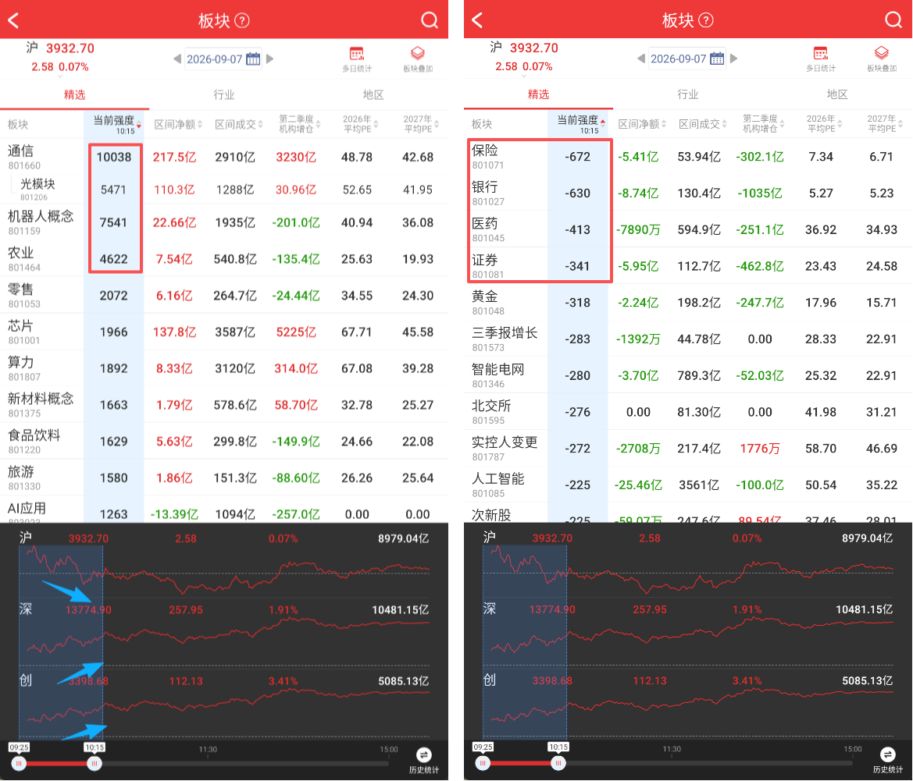

官方定位：「免费为用户提供最简单、最直接、最高效的工具，解构市场逻辑，呈现资金动向，精准把握投资机会」「简单炒股，快乐生活」。所有工具与资讯永久免费。
| 年份 | 上线能力 | 对产品形态的意义 |
|---|---|---|
| 2016 | 开盘啦 APP 正式上线 | 短线工具起步 |
| 2017 | 市场情绪、实时龙虎榜 | 从行情转向「情绪 + 资金」 |
| 2018 | 区间统计、涨停板复盘、板块叠加 | 确立「任意时段回溯」这一核心交互 |
| 2019 | 复盘啦、全新文章系统 | 盘后闭环 + 内容沉淀 |
| 2020 | 全新北向资金系统 | 增量资金维度 |
| 2021 | 深度龙虎榜、竞价系统、积分系统、机构增仓 | 把盘前竞价做成独立体系 |
| 2022 | 机构纪要、我的版面 | 基本面 + 个性化版面 |
| 2023 | 题材库、明天炒什么、异动停牌 | 题材产业链结构化 + 盘前预期 |
| 2024 | 特色标签、我的版面-早盘竞价 | 标签化选股 + 竞价版面化 |
| 2025 | 全面算法升级，全新 UI 即将上线 | 当前版本处于改版前夜 |
来源：官网「关于我们 / 大事记」kaipanla.com/omain/index.html。官方
| 功能 | 作用 | 关键指标 / 页面元素 | 可信度 |
|---|---|---|---|
| 明天炒什么 | 开盘前聚合政策、热点与市场舆论，提前感知次日可能受关注的方向 | 热榜、用户投票看好比例（案例：近 70% 看好数字货币）、关联个股、跳转题材库 | 官方 |
| 题材库 | 汇总全市场题材 + 热度排名 + 产业链「小表格」分支 | 顶部搜索栏、按热度 / 按涨幅切换、持续火爆标记、上升名次 + 红色小箭头、涨停数红色小方块、题材介绍「查看全文」、多级子分支 | 官方 |
| 主题机会 | 时效性题材前瞻 | 最新主题、投资日历、收藏（右上角星号） | 官方文章 |
| 互动易 | 上市公司问答关键词监控 / 热搜 | 智能订阅、自定义订阅关键词（物理 AI / MLCC / 芯片）、热搜排名 | 官方文章 |
| 百日新高 | 用新高家数判断情绪与赚钱效应 | 总趋势、今日新增、新高家数的板块分布 | 官方文章 |
| 机构纪要 / 机构增仓 | 基本面与机构行为线索 | 增仓金额、增仓占比、纪要正文 | 官方文章 |
| 功能 | 作用 | 关键指标 / 页面元素 | 可信度 |
|---|---|---|---|
| 早盘竞价 | 把握整体竞价氛围与个股异动 | 涨停委买额、竞价涨幅、竞价成交额、竞价爆量、主力净额 > 1000w、近期热门股、涨跌家数 | 官方 |
| 板块竞价 | 验证消息 / 题材是否真有资金响应 | 新增竞价异动板块数、竞价爆量倍数、主力净额流入、板块详情内个股集体高开幅度 | 官方 |
| 涨停委买（20 分后） | 最关键窗口：9:20–9:25 委托不可撤单、直接决定开盘价，用于判断资金真实意图 | 总涨停委买额排名、20 分后加单排名、按板块聚合看是否形成板块效应 | 官方 |
| 竞价异动 / 弱转强 | 捕捉情绪拐点 | 竞价环比倍量、高开幅度、利空后大单撬板、结束重点监控 | 官方 |
| 功能 | 作用 | 关键指标 / 页面元素 | 可信度 |
|---|---|---|---|
| 板块（精选 / 行业 / 地区） | 按强度对板块排序，识别日内爆发方向 | 当前强度值、区间净额、区间成交、机构增仓、预测 PE、板块代码、多日统计、板块叠加 | 官方截图 + 教程 |
| 板块强度 | 独创指标：结合板块权重个股、涨停数量、人气、成交额、市场情绪多维测算 | 强度值上万代表强势（案例：人工智能 23524 / 32 家涨停；日内 9693 → 16963） | 官方 |
| 区间统计 / 区间强度 | 拖动时间轴选任意区间，看该时段的板块强度、区间涨幅、区间净额、区间成交 | 历史统计按钮、分时图下方时间轴、按强度 / 净额 / 涨幅 / 成交额排序 | 官方 |
| 市场情绪 | 评估人气与量能 | 数据分析 + 股票列表两栏；竞价 / 涨停 / 炸板 / 跌停 / 自然涨停 / 曾跌停数量；市场量能实际值 + 日内预测量能；北向资金 | 官方 |
| 涨停表现 | 连板梯队与晋级率 | 一板 / 二板 / 三板 / 高位数量、晋级率、市场梯队表现 | 官方 |
| 实时龙虎榜 / 深度龙虎榜 | 动态追踪主力大单资金，回溯历史资金动向 | 按区间净额 / 区间涨幅 / 区间成交额排序、2 分钟成交额、5 分钟区间成交额、时间轴回溯、游资席位 | 官方 |
| 大盘直播 | 文字直播实时点评热门板块个股 | 时间轴 + 关键节点解读（如 09:26 算力竞价弱势、DeepSeek 延续强势） | 官方 |
| 市场风口 / 市场雷达 / 尾盘抢筹 | 监控最活跃个股、自动上榜 | 主力买入 / 主力卖出 / 主力净额 | 第三方整理 |
| 异动提醒 | 严重异动、个股卡异动、结束重点监控 | 异动标签、冲击异动、热门股偏离值、严重异动监控 | 官方 |
| 特色标签 | 不按传统一级行业，按市场语义精选板块 + 选股标签 | 人气核心、人气激增、最正宗、机构增仓；打板页 tab：即将涨停 / 风向标 / 涨停 / 炸板 | 官方 |
| 板块叠加 / 板块详情 | 从龙头到补涨挖掘潜力股 | 板块领涨先锋、板块内联动性、所属板块集中度 | 官方 |
| 功能 | 作用 | 关键指标 / 页面元素 | 可信度 |
|---|---|---|---|
| 复盘啦 | 当日盘面亮点梳理、各板块核心个股整合、炒作高度梯队 | 盘面梳理 / 市场动向 / 涨停原因、盘面亮点、亏钱效应、大幅回撤 | 官方 |
| 涨停天梯 | 连板梯队完整度 | 连板高度、梯队完整度、各层级个股数量、封板时间、所属板块集中度、板块内联动性 | 官方 |
| 涨停原因 | 解释「为什么涨停」 | 催化剂、涨停原因标签、封单、成交额 | 官方 |
| 区间统计（复盘用法） | 多日连续对比，过滤一日游 | 连续 3 日区间强度排名、区间净额是否持续流入；「单日强度走高不足以定主线」 | 官方 |
| 文章系统 / 一图复盘 | 内容沉淀与教学 | 开盘早知道、午间视频直播、涨停板复盘、一图复盘、龙虎榜中榜、北向资讯 | 第三方应用市场 |
| 功能 | 说明 | 可信度 |
|---|---|---|
| 我的版面 | 整合常用看盘功能，版面设置里 ON/OFF 控制显隐、长按拖动排序、保存设置；自选股 / 市场情绪 / 涨停表现按需排列；2024 年新增「我的版面-早盘竞价」 | 官方大事记 + 应用宝 |
| 股票分类 / 自选股宫格 | 按自定义分类管理；手机宫格模式多股 K 线并列 | 应用市场 |
| 商品现货 / 全球商品 / 汇率 / 外围指数 | 跨市场参考 | 应用市场 |
| 区间统计（按股票 / 按板块） | 任意区间个股或板块涨幅、强度、净额 | 官方 |
| 沪深港通 / 北向资金时间轴 / 公告中心 / 大宗交易 / 股东变更 / 业绩披露 / ETF 基金 | 各类数据入口，首页工具栏可横向滑动 | 第三方整理 |
| 开盘啦人气榜 / 顶级游资 / 知名游资 | 盘中人气榜、复盘人气榜、游资跟踪 | 第三方整理 |
根据官方功能位置描述与第三方功能导图，首页结构大致为：
设计意图：短线用户一天要在 10+ 个工具间来回切，所以首页做成「工具启动器」而非内容流；把模块显隐与排序权交给用户，避免为低频功能付出导航成本。

?、右侧搜索图标。红色为品牌色，全页仅此一处大面积使用。2026-09-07 + 日历图标 + 左右箭头切日；右侧「多日统计」「板块叠加」两个图标入口。路径：首页 - 题材库 - 更多 → 题材库主界面。
设计意图：把「今天炒什么」和「炒这条线的哪一节」压到两次点击内；涨停数红方块让用户不点进去就知道热度。
| 页面 | 结构 | 交互核心 |
|---|---|---|
| 早盘 / 板块竞价 | 模块卡片：涨停委买额排名、20 分后委买、竞价爆量板块、主力净额 > 1000w、近期热门股、涨跌家数 | 按指标排序 → 点板块进详情看成分股集体高开；强调「有无板块效应」而非单票异动 |
| 市场情绪 | 上/下两栏：数据分析（市场量能实际 + 预测量能、涨停表现、晋级率、昨日破板今表现）与股票列表（竞价 / 涨停 / 炸板 / 跌停 / 自然涨停 / 曾跌停，各类型数量直接标在 tab 上） | tab 即数量对比；涨停列表按封板时间排序判断「板块里第几个板、龙一龙二龙三」 |
| 复盘啦 | 盘面梳理 / 市场动向 / 涨停原因 + 盘面亮点 + 涨停天梯 + 亏钱效应 + 大幅回撤 | 异动标签筛选、按标签归类；次日行情验证复盘判断 |
| 打板 | tab：即将涨停 / 风向标 / 涨停 / 炸板；涨停时看行情、涨速、封单，跌停时看开板时间 | 状态 tab 切换，配合特色标签（一字加速、权重拉升、反包板、换手板） |
| 我的版面 | 版面设置列表，每项一个 ON/OFF 开关 + 拖动把手 | 长按拖动排序 → 保存设置 → 首页按个人顺序渲染模块 |
用户脑子里是「现在几点该干什么」，不是「我要查哪张表」。
宁可字小、列多，也要让排序结果一屏可见；不做留白很多的卡片瀑布流。
任何数值列都可点表头排序，正负两端都是有效信息。
红方块、红箭头、持续火爆、特色标签，用最小视觉成本标注「为什么看它」。
区间统计、实时龙虎榜、北向资金共用「拖动选时段 → 表格重算」范式。
榜 → 详情 → 个股，不做三级以上嵌套；题材库的多级分支是唯一例外。
消息只给候选，竞价委买 / 板块净额才算确认；只认不可撤单、不可伪造的数据。
功能多到一定程度后，把导航成本交还给用户自定义。
| 优先级 | 借鉴项 | 工作台现状 | 数据源可行性 | 建议 |
|---|---|---|---|---|
| P0 | 题材库式「先定方向」 | 已有：L0 趋势题材榜（12 个）+ 细分题材引擎 140 题材 / 4020 成分股 + 板块涨停分布按家数优先 + 二级下钻 | 东财概念成分股 + 涨停池，已跑通 | 补「持续火爆 / 上升名次 / 涨停数红方块」标记；加入分支维度（现为题材 → 成分股两层） |
| P0 | 竞价验证层 | 缺失：09:25 时段无涨停委买 / 板块竞价 | 需 L2 逐笔委托或竞价快照；腾讯 qt.gtimg.cn 在 09:25 后能取到开盘价与五档，但拿不到 9:20 前后不可撤单委买额的历史分解 | 先做「竞价高开 + 竞价量比 + 板块内集体高开家数」的近似版；不编造委买额 |
| P0 | 临板首板（只推最后一脚） | 已有且更严格：L2 板进度 ≥0.85 + 真实五档封板意愿分 + 2 帧确认 + 排除连板 / ST / 巨量 | 腾讯五档盘口实测可用 | 与「打板页即将涨停 tab」同构，无需改；可补「距涨停%」进度条可视化 |
| P1 | 板块强度值 + 多日区间强度 | 部分：板块强度用「涨停家数 / 连板梯队 / 涨速 / 资金 / 新闻」加权，但只有当日截面 | 需落盘每日快照才能算多日区间强度；当前无历史序列 | 新建 data/theme_strength_history.jsonl，每 30 分钟追加一行，即可支持 3 日持续排名，过滤一日游 |
| P1 | 时间轴 + 区间净额 / 涨幅 | 缺失 | 需要分钟级板块快照；全 A 帧已是每轮抓取，落盘后可回放 | 结合上一项一起做：先落盘，再做可拖动时间轴，避免为了 UI 造数据 |
| P1 | 涨停天梯 / 连板梯队 / 晋级率 | 涨停池已有连板数、按最高连板排序，但无「一板 / 二板 / 三板各几家 + 晋级率」 | 现成：涨停池 + 昨日涨停基线 data/prev_zt.json（116 只） | 低成本高收益，建议优先做 |
| P1 | 涨停原因 / 催化剂 | 新闻催化层已有：东财快讯 200 条 / 14 题材命中，但未关联到单只涨停股 | 可用现有 news_catalyst.py + 题材标签映射，标注为「题材级催化」而非个股原因 | 不编「个股涨停原因」，只给题材级催化标签并写清口径 |
| P1 | 亏钱效应 / 大幅回撤 / 炸板率 | 风险池、炸板率已有数据，但无独立的「亏钱效应」汇总视图 | 现成 | 在复盘页加一条「昨日涨停今表现 / 炸板回撤」状态条 |
| P2 | 我的版面（ON/OFF + 拖动排序） | 树形导航 6 组 16 视图固定顺序 | 纯前端，localStorage 即可 | 可先做「常用视图置顶 + 隐藏不看的视图」，不必做完整拖动 |
| P2 | 特色标签体系 | 已有事件标签（火箭 / 涨速 / 板块 / 临板首板等） | 纯展示 | 给 L1 低位池加「量能抬头 / 即将冒头 / 收盘低位」标签已做；可补「人气核心」类语义标签 |
| 不建议 | 明天炒什么（用户投票）、实时龙虎榜席位、深度龙虎榜、机构纪要、商品现货 | — | 需要社区 UGC / 交易所席位明细 / 付费数据源 | 不照搬、不用爬虫硬凑；用现有东财快讯 + 主题机会替代「盘前方向」 |
调研不是纸上谈兵：对照开盘啦的设计，当场发现并修掉工作台三处问题，其中两处属于误导性提示。
| 调研发现 | 工作台问题 | 处理 |
|---|---|---|
| 开盘啦按时间分段，盘前专门有「明天炒什么」给方向，且明确区分竞价 / 盘中 / 盘后 | 盘前 09:12 打开工作台，L0 趋势题材全空，且状态条被误写成「当前为收盘定版」 | 已修：theme_picker._session_state() 六态判定（preopen / auction / trading / lunch / paused / closed）；新增 overnight_trends()，用昨日涨停 84 只成分股所属题材 + 200 条真实快讯生成隔夜方向榜，前端标「隔夜口径 · 昨涨停」，开盘产生涨停后自动切回实时 L0。 |
| 开盘啦只认不可撤单的确认信号（9:20 后涨停委买），且不把缺失数据伪装成 0 | 「昨日涨停基线」因 sprite 未收到首帧而显示 0 只，真实值是 84 只 | 已修：/api/sprite 改用 app 层权威缓存覆盖，实测前端正确显示 84 只。 |
| 竞价层依赖 L2 逐笔委托（涨停委买额、9:20 后不可撤单部分、板块竞价爆量） | 工作台 09:15–09:25 无竞价数据 | 未做，也不假做：不编造委买额；先用「集合竞价」会话态明确标注当前不可用，待有 L2 数据源再补。 |
| 视觉复核（看截图，不只看接口 200） | L0/L1 区显示「取数失败」：/api/theme_pick 返回 "lead_pct":NaN，Python jsonify 默认允许 NaN，浏览器 Response.json() 严格解析直接抛错 | 已修：源头 theme_board._finite() 挡住 pandas NaN（它还会被 min/max 静默放大成 1.0 污染强度分）；全局 SafeJSONProvider 把所有非有限浮点降级为 null；新增 tests/test_json_safety.py 3 项回归；全路由扫描 26 个 JSON 接口 0 问题。 |
验证：全量 unittest 26 项 OK、全项目 AST 0 错误、两个内联 script node --check OK、theme_picker / news_catalyst / dispatch_diag 三个 --selftest PASS、Playwright 对报告页与工作台控制台 0 error / 0 warning；/api/theme_pick 实测 8 个隔夜题材、严格合法 JSON、毫秒级；全路由 31 条中 26 个 JSON 接口全部严格解析通过、0 个 NaN。
| 等级 | 来源 | 用途 |
|---|---|---|
| 官方 · 高 | kaipanla.com 关于我们 / 大事记、快速入门、盘前教程 42659、盘中教程 42660、盘后教程 42661、题材库教程 38490、区间强度教程 38493 / 39810、市场情绪教程 37451、官方教程界面截图 | 功能名称、指标定义、页面路径、页面结构、设计意图 |
| 应用市场 / 官方转载 · 中 | 应用宝 FAQ 与 appdetail、微软商店、泡美美等应用介绍页、股票复盘网转载功能说明 | 六大特色功能清单、我的版面操作细节、底部导航等补充 |
| 第三方整理 · 参考 | 微信公众号功能导图、第三方下载站功能列表、百科词条 | 首页 ICON 导航区全貌、功能入口位置、辅助性描述 |
边界：本次为公开资料桌面调研，未实机安装 App。因此：底部导航的确切 tab 数、首页 ICON 的完整排列、2025 年「全新 UI」改版后的实际界面、各指标的具体计算公式与刷新频率，均未获官方确认，报告中已逐项标注，不作为事实使用。部分文章页（38829 / 38492 / 39875）WebFetch 只返回 SPA shell 或「暂无数据，5 秒后跳转」，相关内容改由搜索结果摘要与可访问的同主题官方文章交叉验证。